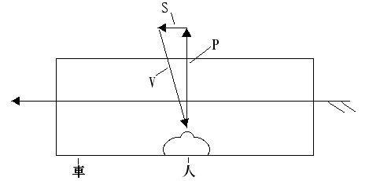
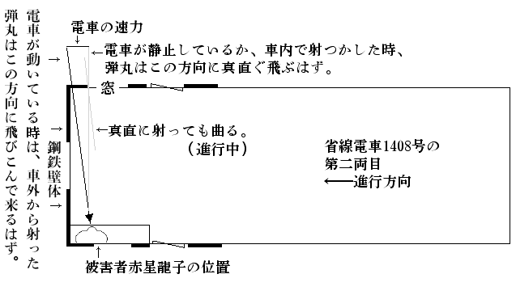

帝都二百万の市民の心臓を、一瞬にして
掴んでしまったという評判のある、この「
射撃手」事件が、
突如として新聞の三面記事の王座にのぼった其の日のこと、東京××新聞の若手記者
風間八十児君が、此の事件に関係ありと唯今目をつけている五人の人物を
歴訪して
巧みに取ってきたメッセージを、その懐中手帳から
鳥渡失敬して並べてみる。
＊ ＊ ＊
「僕は、探偵小説家の
戸浪三四郎である。かねがね僕は、原稿紙上の探偵事件ばかりを扱っているのに
慊らず、なにか手頃の事実探偵事件にぶつかってみたいものだと考えていたところ、こんど偶然の機会をつかみ、この『射撃手』事件の捜査のお仲間入りができるようになったのである。……だが僕は、仕事が忙しいうえに、至って面倒くさがり屋だから、事件が起っても、いつも
直ぐに駆けつけて犯罪の
現場調べをやるというような
勤勉な真似ばかりは出来ない。事件に関する僕の知識は
大江山捜査課長の報告に
基いているものも少くない」（東京郊外、
大崎町の同氏邸にて）
「わたくしは
［＃「わたくしは」は底本では「わたしくは」］ＪＯＡＫ放送局技術部の
笹木光吉です。このたびは飛んだことから事件に関係を持つようになりました。と申しますのは、わたくしの
［＃「わたくしの」は底本では「わたしくの」］邸宅が、事件の犯罪現場に近いところにあって、そのうえ
可なり広い
面積を占めているところから、犯人が邸内のどこかを、うろついているんじゃないかとの御疑いから、警視庁のお呼出しを、しばしば
蒙るようになったのだそうです。なったのだそうです、とは妙な申し
様でございますが、これは大江山捜査課長殿のお話なのですが、わたくしはそれについて半信半疑でいます。それと申しますのが、わたくしが科学者であるというのを
口実にして、わたくしには関係のない事柄にまで科学的意見を
徴されたことが、随分と多うございますのです」（
上目黒の笹木邸内新宅に於て）
「僕は
帆村荘六です。僕は或る本職を持っている
傍、お
恥かしい次第ですが、『
素人探偵』をやっています。無論、その筋の公認を得て居りまして、唯今の捜査課長の大江山も、僕を御存知です。こんどの殺人事件は別に依頼をうけたわけではありませんが、始終注意しています。ひょっとすると、事件の
成行次第で、第一線に立たなきゃならないかも知れません。僕はこの事件に、非常な魅力を感じています」（電話にて）
「あたくしは、
赤星龍子と申します。あたくしは、自分自身のことを余り申上げる気が致しません。そのために疑いが深くなっても仕方がありません。こんな事件に、
何にも罪のないあたくしみたいなものが引込まれるなんて、あたし一生の不運だと思っていますわ、なんでもいいんです」（東京郊外、
渋谷町鶯谷アパートにて）
「大江山警部。年齢三十七歳。警視庁刑事部捜査課長。在職満十年。今回
省線電車内に起りたる殺人事件は、本職を始め警視庁を
愚弄することの
甚だしきものにして、
爾来極力探索の結果、
此程漸く犯人の
目星を
掴むことを得たるを以て、遠からず事件解決の
搬びに至るべし。なお本職を指して
米国市俄古の
悪漢団長アル・カポーンに買収されたる同市警察署長某氏に比するものあるは
憤慨を通り越して、そぞろ
噴飯を禁じ得ざるなり」（警視庁において、タイプライターでうった原文を
手交）
＊ ＊ ＊
さて「射撃手」事件の、そもそも
発端は、次のようだった――
もう九月も暮れて十月が来ようというのに、其の年はどうしたものか、厳しい
炎暑がいつまでも
弛まなかった。「十一年目の気象の大変調ぶり」と中央気象台は、新聞紙へ弁解の記事を寄せたほどだった。復興新市街をもった帝都の昼間は、アスファルト路面が熱気を一ぱいに吸いこんでは、所々にブクブクと真黒な
粘液を
噴きだし、コンクリートの厚い
壁体は燃えあがるかのように白熱し、隣りの
通にも向いの
横丁にも、暑さに脳髄を変にさせた犠牲者が発生したという騒ぎだった。夜に入ると
流石に猛威をふるった
炎暑も次第にうすらぎ、帝都の人々は、ただもうグッタリとして
涼を求め、睡眠をむさぼった。帝都の
外郭にそっと
環状を描いて走る省線電車は、窓という窓をすっかり開き時速五十キロメートルの
涼風を
縦貫させた
人工冷却で、乗客の居眠りを誘った。どの電車もどの電車も、前後不覚に寝そべった乗客がゴロゴロしていて、まるで病院電車が
馳っているような有様だった。そんな折柄、この射撃事件が発生した。その第一の事件というのが。
時間をいうと、九月二十一日の午後十時半近くのこと、品川方面ゆきの省線電車が
新宿、
代々木、
原宿、
渋谷を
経て、エビス駅を発車し次の目黒駅へ向けて、
凡そその中間と思われる地点を、
全速力で疾走していた。この辺を通ったことのある読者諸君はよく御存知であろうが、渋谷とエビスとの
賑やかな街の灯も、一歩エビス駅を出ると急に淋しくなり、線路の両側にはガランとして
人気のないエビスビール会社の工場だの、
灯火も
洩れないような静かな少数の小住宅だの、
欝蒼たる林に囲まれた二つ三つの広い邸宅だのがあるきりで、その
間間には起伏のある
草茫々の堤防や、赤土がむき出しになっている大小の
崖や、池とも
水溜ともつかぬ
濠などがあって、電車の窓から首をさしのべてみるまでもなく、真暗で陰気くさい場所だった。この辺を電車が
馳っているときは、車内の電燈までが、電圧が急に下りでもしたかのように、スーッと薄暗くなる。そのうえに、線路が悪いせいか又は
分岐点だの
陸橋などが多いせいか、窓外から噛みつくようなガタンゴーゴーと
喧しい騒音が入って来て気味がよろしくない。という地点へ、その省線電車が、さしかかったのだった。
その電車は六輌連結だったが、前から数えて第四輌目の車内に、みなさんお
馴染の探偵小説家戸浪三四郎が乗り合わせていた。もし読者諸君がその車輌に同車していたならきっとおかしく思われたに
相違ない。というのは、戸浪三四郎は『新青年』へ随筆を寄稿してこんなことを云った。
「僕は電車に乗ると、なるべく若い婦人の身近くを選んで座を占める。彼女の
生ぐさい体臭や、胸を
衝くような官能的色彩に富んだ衣裳や、その下にムックリ盛りあがった
肢態などは、日常
吾人の
味うべき最も
至廉にして合理的なる
若返り法である」と。そして、
成程戸浪三四郎の向いには、桃色のワンピースに、はちきれるようにふくらんだ真白な二の腕も
露な十七八歳の美少女が居て、窓枠に白いベレ帽の頭を
凭せかけ、弾力のある紅い
口唇を軽くひらいて眠っていた。それから戸浪三四郎の隣りには、これはなんと水々しく
結いあげた
桃割れに、
紫紺と水色のすがすがしい大柄の
絽縮緬の着物に
淡黄色の夏帯をしめた
二十歳を二つ三つ踏みこえたかと思われる純日本趣味の美女がいた。車内にチラホラ目を
覚している組の連中は、この二人の美しい対照に、さり気ない視線をこっそり送っては
欠伸を噛みころしていたのだった。
車輪が
分岐点と噛み合っているらしくガタンガタンと
騒々しい音をたてたのと、車輌近くに陸橋のマッシヴな
橋桁がグオーッと
擦れちがったのとが同時だった。乗客は前後にブルブルッと
揺られたのを感じた。その
躁音と激動に乗せられたかのように、例のワンピースの美少女の身体が前方へ、ツツツーと
滑った。両膝を
もろに床の上にドサリとつくと、ブラリと下った二本の裸腕で支えようともせず、上体をクルリと右へ
捩ると、そのままパッタリ、電車の床にうつ
伏せになって倒れた。
車内の人々は、少女が居眠りから本眠りとなり、うっかり
打転ったのだったと思った。乗客たちは、洋装のまくれあがったあたりから覗いている真白のズロースや、恐いほど真白な太股の一部に
灼けつくような視線を送りながら、今この少女が起きあがって、どのような魅力のある
羞恥をあらわすことだろうかと、期待をいだいた。だが、一同の期待を裏切って、少女はなかなか起き上ろうとしなかった。ピクリとも動かなかった。
「様子がヘンじゃありませんか、皆さん！」
そう云って立ち上ったのは、
商人体の四十近くの男だった。一座は
俄かにザワめいて、ドヤドヤと少女の周囲に馳けよった。
「早く起してやり給え」
こう云ったのは、探偵小説家戸浪三四郎のうわずった
声音だった。
「モシモシ、娘さん」と
甲斐甲斐しく進みでた商人体の男は、少女の肩を、つっついた。無論、少女はなんの
応答もしなかった。さらばと云うので、彼氏は右手を少女の肩に、それから左手をしたから少女の胸に差入れて、グッと
抱え起した。少女の頭はガクリと胸に垂れ下った。ヌルリと滑った少女の
胸部だった。
「
呀ッ」抱きおこした少女を前から
覗いた男が、顔色をかえて、背後の人の
胸倉に
縋りついた。
「血だ。血――血、血、血ッ」その隣りの男が、気が変になったように声を
震わせて叫んだ。
「ヒエッ！」商人体の男は
吃驚仰天して、前後の考えもなく、少女の身体をその場にドサリと
抛り出した。
戸浪三四郎がこれに代って進み出ると、少女の身体をソッと上向きに寝かせた。人々の前に、少女の美しい
死顔が始めてハッキリと現れたのだった。左胸部を中心に、衣服はベットリ
鮮血に染っていた。その上、床の上に二尺四方ほどを、
真紅に
彩っているところをみると、出血は極めて瞬間的に多量だったものと見える。
「車掌君はいないか。駄目らしいが、一応早く医者に見せなくちゃいけない」
そこへ車掌が来た。
「皆さん、ずっと
後へ寄って下さい。電車は只今、全速力で次の駅へ急がせていますから……」
言葉の終るか、終らないうちに、電車は悲鳴に似たような非常警笛をならして、目黒駅の構内に突入して行った。電車が停車しない前に、専務車掌の倉内銀次郎はヒラリとプラットホームに飛び降り、駅長室に馳けこむなり、医者と警視庁とに電話をかけた。その間に電車は停り、美少女の倒れた第四輌目の乗客は全部、外に追いだされた。
駆けつけた附近の医者は、電車の
床の上に
転った美少女に対して、
施すべき何の
策をももたなかった。というのは、彼女の心臓の上部が、一発の弾丸によって、
美事射ちぬかれていたから。弾丸は左背部の肋骨にひっかかっているらしく、裸にしてみた少女の背中には弾丸の
射出口が見当らなかった。「
銃丸による心臓貫通――無論、
即死」と医者は断定した。
惨死体を乗せた電車は、そのまま
回避線へひっぱり込まれ、警視庁からは大江山捜査課長一行が到着し、検事局からは
雁金検事の顔も見え、係官の揃うのを待ち、電車をそのまま
調室にして取調べが始まった。
大江山警部は、やや青ざめた神経質らしい顔面を、ピクリと動かして、専務車掌の倉内銀次郎を招いた。
「倉内君、君に判っている一と通りを話してきかせ給え」
「ハァ、それはこうなんです」と彼は、係官の前の
小机の上に、線路図や、電車内の見取図を
拡げて、彼が乗客の注意で、殺人の現場にかけつけてのちに見た事柄や、乗客から聞いたそれ以前の話など、既に読者諸君が御存知の事実を述べた。
「君は、事件の起ったときに、どの位置に居たかネ」大江山警部は
訊問した。
「ハッ、やはりあの第四輌目に居りましたが、車掌室が別になっているもんで、早く気がつきませんでした」
「君は車掌室のどの辺に居たか」
「右側の窓のところに頭部を当てて立って居りました」
「事件の前後と思われるころ、何かピストルらしい音響をきかなかったか」
「電車の音が
騒々しいもので聞きとれませんでした」
「君は窓外の
暗闇に何かパッと光ったものを認めなかったかい」
「ハッそれは……別に」
「君の位置から車内が見えていたか」
「見えていません。カーテンが降りていましたから……」
「車内へ入ってから、銃器から出た煙のようなものは
漂っていなかったか」
「御座いませんでした」
「車内の乗客は何人位で、男女の別はどうだった」
「サア、三十名位だったと思います。婦人乗客が四五人で、あとは男と子供とでした」
「その車の定員は？」
「百二名です」
「これは参考のために答えて貰いたいんだが、あの際、銃丸は車内で発射されたものか、それとも車外から射ちこんだものか、
何れであると思うかね、君は」
大江山警部が、少女の射ち殺された頃の事情を一向
弁えぬ専務車掌に、こんなことを聞くのは、愚問の外のなにものでもないと思われた。
「車内で射ったんでしょうと思います」
専務車掌の倉内は、警部の愚問に
匹敵するような
愚答を
臆面もなくスラリと述べた。
「じゃ君は何故、あの車輌に居た乗客を
拘束して置かなかったのか」
「……
只今になってそう気が付いたもんですから」
「そう思う根拠は、なにかね」
「別に根拠はありませんが、そんな気がするんです」
「それでは仕方がないね。なんだったら、ここに居られるあの時の乗客有志を一時退場ねがった上で、君の考えをのべて貰ってよいが……」
車内に居た乗客の多くは、事件に
係合になるのを
厭がったものと見え、死人電車が目黒駅のプラットホームに着くと、バラバラ散らばってしまい、このところまで
随いてきたのは僅か二人だった。その一人は、左手を少女の血潮で真赤に染めた商人
体の四十男で、もう一人は探偵小説家の戸浪三四郎だった。
「ばば馬鹿を言っちゃいかん」と其の商人体の男が、たまり兼ねて口を差入れた。「いま聞いてりゃ、車内の者が射ったということだが君が出て来たのは随分経ってからじゃないか。そんなに
後れ
走せに出てきて何が判るものか。第一、あたしはあの車内に居たが、ピストルの音をきかなかった。ね、あなたも聞かなかったでしょう」と戸浪三四郎の方を振りかえった。
戸浪は黙って軽く
肯いた。
「ほら御覧なせえ、鉄砲
弾は窓の外から飛んできたのに
違げえねえ。あまり根も葉もないことを言って貰いたかねえや。
手前の間抜けから起って、
多勢の中からコチトラ二人だけがこうして引っ張られ、おまけに人殺しだァと証言するなんて、ふざけやがって……」
「これ林三平さん、静かにしないか」と、車掌に喰ってかかろうとする商人体の男を止めたのは、大江山警部だった。「戸浪三四郎さんから何か別な
陳述を
承りたいですが」
「僕はすこし意見を持っています。
先刻申しあげたように探偵小説家という立場から僕は申すので、或いは実際と大いに違っているかも知れません。僕は殺された美少女、――
一宮かおるさんと云いましたかネ、かおるさんの直ぐ向いに居たのですが、確かにピストルの爆音を耳にしませんでした。ですが、ちょっと耳に残る
鈍い音をきいたんです。さよですなア、空気をシュッと切るような音です。きわめて鈍い、そして
微かな音でした。これはどうやら右の耳できいたのです。右の耳というと、電車の進行方面の側の耳です。その行手には、倉内君の居られた車掌室があります。またその右の耳のある隣りには二尺ほど離れて、日本髪の婦人が腰をかけて居りました。そんなことから思い合わせると、
弾丸は僕の身体より右側の方からとんで来たと思われます。林さんは僕よりずっと左手に居られたので関係はないようです。車内で射ったとすれば、私も
嫌疑者の一人でしょうが、僕より右手にいた連中も同時にうたがってみるべきでしょう。日本髪の婦人は勿論のこと、失礼ながら倉内車掌君も
同類項です」
「すると貴方は、車内説の方ですか」と大江山警部が尋ねた。
「いえ、
寧ろ僕は車外説をとります。
弾丸は車外から射ちこまれ、例の日本髪の婦人と僕との間をすりぬけて、正面に居た一宮かおるさんの
胸板を
貫いたのです。シュッという音は、
銃丸が僕の右の耳を
掠めるときに聞こえたんだと思います」
「もう外に聞かしていただくことはありませんか」
「現場に居た人間としては、もう別にありません。
老婆心に申上げたいことは、あの現場附近を広く探すことですな。もしあの場合
銃丸が乗客にあたらなかったとしたら、銃丸は窓外へ飛び出すだろうと思うんです。いや、そんな銃丸が既に沢山落ちているかもしれません。そんなものから犯人の手懸りが出ないかしらと思います。
屍体もよく
検べたいのですが、何か異変がありませんでしたか」
「いや、ありがとう御座いました」と警部は戸浪三四郎の質問には答えないで、彼の労を
犒った。
大江山捜査課長は、警視庁の一室で
唯ひとり、「省線電車射撃事件」について、想念を
纏めようと努力していた。
戸浪三四郎が「一宮かおるの屍体に異常はないか」と聞いたのは
炯眼だった。屍体の
纏っていた衣服の左ポケットに、おかしな
小布が入っていた。それは
丁度シャツの
襟下に縫いつけてある製造者の
商標に似て、大きさは三センチ四方の青い小布で、中央に白い十字架を浮かし、その十字架の上に重ねて赤い糸で、横向きの
髑髏の縫いがあった。
この髑髏の
小布はなにを示すものなのだろう。
お守りなのであろうか、と考えた。あまりに平凡である。
不図思いついたことは、これはある不良少女団の
団員章ではないか、と。殺された一宮かおるは、××女学校の校長の
愛娘だったのであるが、教育家の家庭から不良児の出るのは、珍らしいことではない。かおるは不良少女であったが、仲間の
掟を破ったために殺された、と見てはどうであろう。
大江山警部は給仕を呼んで、不良少女
調簿をもってこさせると丹念にブラック・リストの隅から隅まで探しまわったが、かおるの名前も、その怪しげな
徽章も見つからなかった。そうすると、未検挙の不良団なのであろうか。
このように考えてくると、
銃丸は車内でぶっぱなされたと考えるのが、
本道である。だが車内でズドンという音を聞いたものがないではないか。それなら
消音ピストルを用いたものと考えてはどうか。
だが乗客の多くは逃げてしまった。商人と称する林三平と、小説家の戸浪三四郎とを疑うのは最後のことである。車掌の倉内は、たった一人で
車掌室に居ただけに、すこし弁明がはっきりしない。答弁にすこしインチキ臭いところが無いでもない。彼はピストルの音をきかなかったという。
騒音に慣れた彼が、ピストルの音をきかなかったというのであるからそれは本当であろう。
ところが刑事が出かけて、現場附近の住民に聞き正したところによると、当日夜の十時と十一時との間に爆音をきいたという人間が三人ばかり現れた。そのうちの一人は、
現場に割合い近い踏切の番人だったが、丘陵にひびくほど相当大きい音だったという。但し発砲の音というよりも、自動車がパンクしたような音に近かったという。これは帝都全市のタクシーや自家用自動車につき調査中であるから、二三日のうちに判明するであろう。
もしそれが発砲の音だったら、車掌の耳はどうかしていたことになりはしまいか。電車の騒音は、車内よりもむしろ車外の方が大きいのだから。専務車掌室の
扉を細目にひらいて、消音ピストルを打ったと考えてはどうであるか。それでは
銃丸は、かおるの
左胸を
側面から射つことになる。
然るに彼女の弾丸による
創管は、ほんの少し左へ傾いているが、ほとんど正面から
真直に入っている。これは違う。それでは、電車の進行中、彼は窓から屋根によじ昇り、屋上の
欄干に足を入れて
真逆にぶら下ると
丁度、顔が窓の
上枠のところにとどくから、そのまま
蝙蝠式にぶら下って消音ピストルをうち放つ。それがすむと、
何喰ぬ顔をして車掌室にかえり、室内の騒ぎを始めて知ったような風を
装って馳けつける。うん、こいつは出来ないことじゃない。車掌倉内銀次郎の
身辺をすこし洗ってみよう。
「コツ、コツ！」と
扉を叩く者がある。
「よろしい」大江山警部は、扉の方を向いた。扉がスウと開いた。入って来たのは、給仕だった。
「速達でございます」そう云って給仕は、課長の
机上に、茶色の大きい包紙のかかっている四角い包を置いて、出て行った。
警部は、注意して包をひらいてみた。中には、「ラジオの日本」という雑誌の昭和五年十二月号が一冊入っているきりだった。それを取上げてペラペラと
頁をめくってみると、
半頃に
頁を折ってあるところがあった。そこを開けると、白い
小布が
栞のように
挿まっていて、矢印が書いてある。矢印の示すところには赤鉛筆で、
傍線のついている記事があった。表題は、「無線と雑音の研究」とあり、「
大磯ＨＳ
生」という人が書いているのだった。大江山警部にとって、無線の記事は一向ありがたくなかった。彼は雑誌を
抛りだそうと思ったが、「雑音」という文字が、電車の騒音と関係がありはしまいかと思って、
兎に
角、ぽつりぽつりと読みはじめた。直ぐに彼は、見当ちがいだったことに気がついたけれども、その記事は、思ったよりも
平易である上に、その内容は大江山警部の注意を
喚起するのに充分だった。
「無線と雑音の研究」を思いたったＨＳ生は、東海道線大磯駅から程とおからぬ山手に住んでいる人だった。彼の家にはラジオ受信機があったが、ラジオを聴いていると、それが聴きとれないほどのガリガリッという大きな雑音が、一日にうちに数十回入ってくるのだった。彼はラジオに雑音の起る時刻を測ってみたところ、それは毎日きまった時刻にガリガリッと鳴ることを発見した。それから、
探求を進めてゆくと、雑音の原因は、家の前を通る列車の電気機関車が、
架空線に接触するところで、小さい火花を生ずるためで、
殊に大きい雑音は、架空線の
継ぎ
目のところで起ることが判った。その結果、受信機で雑音を数えながら、時計をみていると、列車が毎時幾キロメートルの
速度で走っているか、又列車はどの地点を走っているかが、家の中に居ながらして、手にとるように判るというのである。ＨＳ生は、大磯附近の地図や雑音の大きさを示す曲線図を沢山
挿入して、これを説明してあった。
「こりゃ面白い発見だ」と大江山警部は、思わず
独言を言った。「だが、この記事が、なにになるというんだ」
なにか省線電車射撃事件に関係があるようでいて、さァそれはどういう関係だと聞かれると、説明ができなかった。ただ
漠然たる一致が感じられるばかりだった。警部は、それを、自分の科学知識不足に
帰して、ちょっと
忌々しく感じたのだった。それにしても、一体誰がこの雑誌を送ってよこしたのだ。
また
扉を叩くものがあった。部下の多田刑事であることは開けてみるまでもないことだった。
応と答えると、果して多田刑事が入ってきた。彼の喜びに輝いている顔色はなにごとかを発見してきたのに違いない。
「課長！ とうとう面白いものを見付けてきました。これです」多田は、そう云って、小さい紙包を、大江山警部の前に置いた。
警部は、それを手にとって開いてみると、二個の
薬莢だった。
「ほほう、これはどこにあった」
「現場附近の
笹木邸の
塀の下です」
「待て待て、これが
弾丸に合うかどうか」と警部はやおら立って
傍らの
硝子函から弾丸をつまみ出すと薬莢に合わせてみた。
果然、二つはピタリと合って、一つのものになった。警部が硝子函からとり出したのは、殺された一宮かおるの体内から抜きとった弾丸だったので、多田刑事の拾ってきたのは、
紛れもなく、その弾丸を打ち出した薬莢にちがいないと思われる。薬莢が二個で、弾丸は一個――そこに謎がないでもなかったが。
「お手柄だ。そして笹木邸をあたってみたかい、多田君」
「
早手廻しに、若主人の笹木
光吉というのを
同道して参りました。ここに大体の
聞書を作って置きました」
そう云って、多田刑事は、小さい
紙片を手渡した。警部は
獣のように低く
呻りつつ、多田の聞書というのを読んだ。「よし、会おう」
案内されて、室へ静かに姿をあらわした笹木光吉は、三十に近い青年紳士だった。色は黒い方だったが、ブルジョアの息子らしく、上品ですこし
我が強いらしいところがあった。
「飛んだ御迷惑をかけまして」と大江山警部の口調は
丁重を
極めていた。「実は部下のものが、こんなものを（と、二個の薬莢と一個の弾丸を示しながら）拾って参りましたが、薬莢の方はお邸の塀下に落ちて居り、弾丸は、ここに地図がありますが、線路を越してお
邸の向い側にあたる
草叢から拾い出したのです。お心あたりはございませんか」
そう云って刑事は、白い西洋紙の上に、三品をのせて差し出した。多田刑事は、課長の
出鱈目に
呆れながら、青年の顔色を
窺った。
「一向に存じません」と笹木はアッサリ答えた。「指紋が
御入用なら、遠慮なく本式におとり下さい」
大江山警部は、笑いに、
赭い顔を
紛らせながら、白い西洋紙をソッと
手許へひっぱったのだった。
「九月二十一日の午後十時半には、どこにおいででしたか、
承りたい」
「家に居ましたが、もう寝ていました。私はラジオがすむと、
直ぐ寝ることにして居りますから……」
「おひとりでおやすみですか」
「ええ、どうしてです。私のベッドに、
独り寝ます。妻は、まだありません」
「誰か、当夜ベッドに寝ていられてのを証明する人がありますか」
「ありますまい」
「十時半頃、何か銃声みたいなものをお聞きになりませんでしたか」
「いいえ。寝ていましたので」
「御商売は？」
「ＪＯＡＫの技術部に勤めてます」
「ＪＯＡＫ！ アノ放送局の技師ですか」大江山警部の
顔面筋肉がピクリと動いた。
「そうです、どうかしましたか」
「『ラジオの日本』という雑誌を御存知ですか」
「無論知っています」
「貴方のお名前は
光吉ですか」
「
光吉です」
「大磯に別荘をお持ちですかな」
「いいえ」
「だれかに
恨みをうけていらっしゃいませんか」
「いいえ、ちっとも」
「邸内に悪漢が忍び入ったような
形跡はなかったですか」
「一向にききません」
大江山警部は、さっぱり当りのない
愚問に、
自ら
嫌気がさして、
鳥渡押し黙った。
「省線電車の殺人犯人は、まだ見当がつかないのですか」と反対に笹木光吉が口を切った。
「まだつきません」と警部は、ウッカリ返事をしてしまった。
「
銃丸は車内で射ったものですか、それとも車外から射ちこんだものなんですか」
「……」警部はむずかしい顔をしただけだった。
「銃丸を身体の中へ打ちこんだ角度が判ると、どの方角から発射したかが
識れるんですが、
御存知ですか。殺されたお嬢さんは、心臓の真上を殆んど正面からうたれたそうですが、正確にいうとどの位の角度だけ
傾いていましたかしら」
「さあ、それは……」警部はギクリとした。彼は屍体に
喰い込んだ弾丸の
入射角を正確に測ろうなどとは
毛頭考えたことがなかった。「それは面白い方法ですね」
「面白いですよ、いいですか、これが電車です。電車の速度をベクトルで書くと、こうなります、弾丸の速度はこうです……」と笹木光吉は、三角
定規を組合わしたような線を、紙の上に引いてみせて、「これが
弾丸の
入射角です。分解するとどの方向からとんで来たか、直ぐ出ます、やってごらんなさい」

「あとからやってみましょう」
と警部は礼を言った。
「射たれたとき、お嬢さんの身体はすこし右に倒れかかっていたそうですね」
「ほう、それをどうして御存知です」警部は
驚愕を
強いて隠そうと努力するのだった。
「あの晩、邸へ遊びに来た親類の女が云っていました。殺されたお嬢さんの直ぐ前に居たのだそうです」
「ああ、それでは
若しや
日本髪の……」
「その通りです」
「その御婦人はどこに住んでいらっしゃいます」
「
渋谷の
鶯谷アパート」
「お名前は？」
「
赤星龍子」
大江山警部は、夜に入っても、捜査課長室から動き出そうとしなかった。事件に関係のありそうな「謎」は後から後へと
山積したものの、これ
等を解くべき「
鍵」らしいものは一向に見当らないのだった。
この上は
恥を忍び、あえて
満都の
嘲笑に耐えて、しっかりした推理の足場を組みたてて事件の真相を
掴まなければならない。警部はその第一着として、笹木光吉の残して行ってくれた弾丸の
飛来方向の計算にとりかかった。
改めて電話で、法医学教室へかおるの
創管の角度は正確なところ、幾度となってるかを問いあわしたり、鉄道局を呼び出して、エビス目黒間に於ける電車の速度変化を
訊ねたりして、数字を知ると、懸命に数式を解いた。なるほど、弾丸の飛来方向がちゃんと出て来たので現場を中心として、鉛筆でその方向に長々と直線をひっぱった。それは線路に、ほとんど九十度をなして
交る方向だった。そして、なんとその弾丸線は、笹木邸の
北隅を貫いているのである。しかも弾丸線のぶつかった塀の下こそは、部下の多田刑事が、薬莢をひろってきた地点だったではないか。その地点から、電車の窓までの最短距離は
僅々五十メートルしかなかったのだった。小さなピストルでも、容易に
偉力を発揮できるほどの近さだった。
それにしても、みすみす自分の邸が疑惑の
的になると知りながら、この計算法を教えていった笹木光吉の真意というものが、警部にはサッパリ解らなかった。彼は、課長室の椅子にふんぞり
反って、大きい頭をいくたびとなく振ってみたものの、笹木の好意と悪意とが互いに
相半ばして考えられるほかなかったのだった。
ジリジリと
喧しく課長室の卓上電話が鳴ったのは、このときだった。
「課長どのですか」そういう声は、多田刑事だった。
「そうだ、多田君どうした」
「あの赤星龍子を渋谷からつけて、品川行の電車にのりました。八時半でした。すると、私と赤星龍子の乗っていた車輌に、また殺人事件がおこりました」
「なに、人が殺された。
銃創かい」
「そうです。若い婦人、
二ツ
木兼子という名前らしいです。弾丸のあたったのは、矢張り心臓の真上です」
「よし、直ぐゆく。乗客は
禁足しといたろうな」
「それが皆、出ちまったのです。あまり早く駅についたものですから……」
「馬鹿！」
大江山捜査課長はカンカンに怒って、四十
哩で自動車を飛ばして、
待避線に収容された死人電車にとびこんでいった。
「課長、こっちに殺されています」と
悄気かえった多田刑事が案内した。
「龍子はどうした」
「目黒で降りたようです」
「屍体なんか、どうでもよいから、今度からは龍子を其の場でとりおさえるんだぞ」
「課長、例の十字架に
髑髏の
標章の入った
小布が、死体の
袂の中から出てきました」
第二の犠牲者二ツ木兼子は二十歳あまりの和服すがたの丸ぽちゃ美人だった。
「弾丸は、この窓から、とんで入ったらしいです」
「地点はどうかッ！」
「昨日の一宮かおるの場合と全く同じなんです」
「ううむ」警部は
呻った。
「専務車掌は倉内銀次郎か、どうか」
「違います。倉内は今日非番で、出てこないそうです」
そう言っているところへ、赤と金との筋の入った帽子を
被った
助役が、
真蒼になって、とびこんできた。
「警視庁の方、ももも申し上げます」
「どうしたかッ」大江山警部は、ギョッとふりかえって、
一喝した。
「唯今、プラットホームへ入って来た
上り電車で、乗客がまた一名射殺されました」
「なに、又殺されたッ、女か男か」
「奥様風の二十四五になる婦人です」
「上り電車の窓は皆締めるよう、エビス駅長へ警告しろッ」
「ハッ、でもこの暑さでは……」
「しっかりしろ、暑さよりも生命じゃないか、助役君」
待避線にはガラ
空き電車が二組も
窮屈そうにつながった。駅は上を下への大騒ぎだった。駅員はもとより、しっかりしていなければならない警官たちまでが、常識を
喪ったかのように、意味なく騒ぎまわった。捜査課長大江山警部だけは、眼を
真紅に充血させて
呶鳴りちらしてはいるものの、一番冷静だった。
第三の犠牲者は三浦糸子と云った。
可なり
上背のある婦人で、クッションのように
軟くて弾力のある肉付の所有者だった。銃丸は心臓の丁度真上にあたる部分を射って、
大動脈を破壊してしまったものらしい。第一、第二の犠牲者に比して
創口はすこし上方にのぼっているのだった。三人の犠牲者は、いずれも左側の座席に腰を下ろしていたことが判った。そのうえ弾丸の射ちこまれた地点までが、物差で
測ったようにピタリと一致していた。大江山警部の頭には、線路を
距てて、真暗な林に
囲れ立つ笹木邸の洋館が浮びあがってくるのを、
払いのけることができなかった。
警部は数名の刑事を
手許によんで、一人一人に秘密の命令を耳打ちした。駅員には、上り電車がプラットホームに到着しても、車内に
異状を認めない上でないと、乗客出入口の
扉を開いてはならないと命令した。
そのあとで警部は、今しがた第三の犠牲者のハンドバックから見付けてきた例の十字架に
髑髏の
標章を、車内の明るい
燈火の下で、注意深く調べた。前の二枚の
標章と
合わせてこれで三枚になったのだった。警部の
面には
困惑の色がアリアリと現れた。グッとその
小布を
掌のうちに握りしめると、警部は、車外に出てザクリと
砂利を踏んだ。
（おお
呪いの
標章よ）
警部は心の中でそう云って「ううむ」と
呻り
声をあげた。それを持っている人間ばかりが、どうして射殺されるのだろう。
窓外から弾丸を射ちこんだとすれば、その犯人は、なんという射撃の名人だろうか。
呪いの
標章を贈ったその人間を
覘うこと正確に、しかもその心臓を
美事に射ち
貫くことは、実に容易ならぬ技量である。だがこの悪意ある射撃は、世紀末的な
廃頽せる現代に
於て、なんと似合わしいデカダン・スポーツではあるまいか。
小暗いレールを踏み越えて、ヒラリとプラットホームに飛びあがった大江山警部の鼻先に、ヌックリ
突立った男があった。
「大江山さん、
豪いことになりましたね」
「おお、貴方は、探偵小説家の戸浪三四郎さんでしたな」と警部は云った。戸浪は洗いざらしの
浴衣姿というだらしの無い
風をしていたのだった。警部は戸浪三四郎が、第一の射殺事件のときに指摘してくれたヒントが、唯今になって否定することのできない明確な事実を生んでいるのに、思いあたった（この探偵小説家の名論が聞けるものなら）。――それは溺れる者がつかむという
藁以上のものであると、警部はみずからの心に弁解をして置いて口を開いた。「どうして、これへ来られましたな」
「これごらんなさい」そう云って彼の差出したのは、
初号活字の大きい見出しのついた東京××新聞の号外だった。
省線電車に
大胆不敵な射撃手現わる
前夜と同一犯人か
とあり、今夜の二ツ木兼子射殺事件がデカデカに報道されてあった。間もなく第三の三浦糸子射殺事件が更に大々的活字で報道されるのかと思うと、警部の
耳底に、新聞社の輪転機の
轟々たる響がにわかに聞こえてくるようだった。
「射撃手――だって、新聞は云ってますぜ。これで三人ですね」
「若い女性ばかりを
覘う痴漢射撃手です」と警部は、ムッとして思わぬことを言い放った。「ときに貴方はエロ探偵小説もお得意のようでしたな。ハッハッ」
「冗談云っちゃいけません、大江山さん、貴方は隠しておいでのようですが、省線電車の射撃手は地獄ゆきの
標章を
呉れておいて殺すというじゃありませんか。三人の犠牲者はどこの人で、どこを通ってきたのかを調べると三人に共通なもののあるのが発見されると思いますよ。そいつをひっぱってゆくと、十字架と
髑髏の秘密結社が出てくるんじゃないですか」
「秘密結社ですって？」
「そりゃ僕の想像ですよ」
戸浪三四郎は呪いの
標章についてもっと何かを知っているのだと、警部は
悟った。小説家にも尾行をつけることだ。「探偵小説家は実際の犯罪をしない。それは、いつもペンを走らせて犯罪を
妄想しているから、犯罪興奮力が
鈍っているのだ」と云った人があるが果してそうだろうか。
「だが戸浪さん。犯人を解く謎は、そればかりではなく、
沢山あるのですよ」
「謎がそう沢山あると思うのは、大間違いです」と戸浪は
軽蔑の口調をあらわして云った。「僕は案外単純な事件だと思うが……」
「戸浪さん、貴方は弾丸が車内で射たれたか又は車外から射ちこんだか、どっちと考えていますか」
「それですよ、大江山さん。僕は昨日その質問をうけたとき、車外説をもち出しました。今夜の殺人の話をきいてみますと、三人が三人とも同じ地点で、同じ右側にかけた人が、同じく心臓を射たれたそうですね。それは車内で射ったとしてもあり得ることですが、その正確なる射撃ぶりから
推して、何か車外の地点に、非常に正確な銃器を
据えつけて、機械的に的を
覘ったのだと考えた方が、面白くありませんか」
「すると、どんな機械なんでしょう」
「僕もよくは知りませんが、四・五センチの
口径をもったピストルなんて、
市場にはちょっと見当らない品です」
「ほほう、よく口径を御存知ですね」
「法医学教室にいる友人に聞いたのです。それで犯人は特殊な科学知識をもっていて、恐るべき武器を持っていると考えるのです。ピストルを消音にすること位は、わけはありません。発砲の火を隠すためには、相当長い
管をつかって、先に弾丸の出る小さい穴をあけとけばよろしい。専務車掌が窓外に火を見なかったというのも、こんな仕掛けをすれば説明がつきます。あとは、電気を使って発砲させることもできるでしょう」
「わかります！」と警部は、探偵小説家の途方もない想像力で
煙にまかれながら、
合槌をうった。
「射撃手が
跳梁するのは、三人が三人とも申し合わせたように夜間に限るのはどうしたものでしょう。いいですか、これは面白い問題です。車内に
殺人鬼がいるのだったら、なにも夜分を選ばなくても、真昼間だって割合
空いた電車があるでしょうから、射ちたくなる筈です。それがなくて夜に限るというのは、この精巧な器械を、或る地点に据えつける必要があるからなんです。器械や、犯人の姿を見られては困るからです」
大江山警部は、例の
癖をだして
獣のように
呻っていた。その一方に、探偵小説家というものは、こんなにまで科学的でなければ
勤まらないものかと、或る種の疑惑が湧いてこないでもないのだった。
「貴方はよくお調べですね」と警部が
皮肉のつもりで云った。
「貴方が見逃しているところを拾って、事件を早く解決したいのです。僕も容疑者の一人だそうですからね。ハッハッ」
刑事が一人、
馳けてきた。
「課長どの、総監閣下のお電話です」
「ナニ総監の……」警部は
渋面を作った。
「お気の毒ですなア」と戸浪が彼の背中をポンと叩いた。
総監は果して非常に不機嫌だった。大江山捜査課長は
油汗を
拭う
暇もなく、水を浴びたような顔をして、
縷々と
陳述した。
「君は、目黒の笹木光吉の
情婦である赤星龍子が
本郷の
小柴木病院で毎日耳の治療をうけているのを知っているか」と総監が突然言った。
「いや、存じませんが……」警部は耳の治療どころか、龍子が笹木の愛人であることも聞くのが始めてだった。
「そんなんじゃ困るね、君は」と総監のつっぱなすような声が受話器の中に反響した。「それから、戸浪三四郎が元浜松高等工業学校の電気科の先生をしていたことを知ってるか」
「ううウ」と警部は電話機に
獅噛みついて
呻った。「そそそれも存じませんが……」
「……」総監は無言だった。総監も呻っているのであろう。
「総監閣下、失礼ですが、誰がそんなことを申しましたか」
「
帆村荘六氏じゃ、私立探偵の。いま私の邸に見えて居られる」
帆村荘六といえば、警部は知らぬ人でもなかった。まだ経歴の若い素人探偵だったが、モダーンな科学探偵術をチョコチョコふりまわし、事件を不思議な手で解決するので、少し評判が出てきた人だった。
「君が必要なとき、いつでも応援をして下さるそうだ。今、お願いしておこうか」
「いえ、それには及びません」大江山捜査課長は、泣きだしたいような気持をこらえて、
断然拒絶した。
大江山警部は電話をガチャリと切ると、しばし其の場に立ちすくんだ。考えてみるまでもなく、彼の立場はたいへん不運だった。彼は今度の事件で、どうしたものか、犯人の目星を一向につけることができなかった。昨日今日の事件ではあるが、林三平、倉内銀次郎、戸浪三四郎、赤星龍子、笹木光吉と疑いたい者ばかり多いくせに、犯人らしい人物を指すことができないのだった。唯今の総監の言葉から思いついたことは、電気の先生だった戸浪が
相当頼母しい探索をしていてくれるから、彼と同盟すれば、大いに
便宜が得られるであろうという見込みだが、但し戸浪自身が犯人の場合は全く失敗になるわけだった。戸浪に会って気をひいた上で決定しようと考えた。赤星龍子が笹木の愛人であるのは驚いたが、前後二回も、殺人のあった電車にのっていたのは、
一寸偶然とは考えられない。実は先刻部下に命じて置いた龍子の
動静報告がきた上で、もすこし
詳しく考えてみたい。……
大江山警部は電話のある室を出て、階段をプラットホームに下りながら、懐中時計を出してみた。もう夜も
大分更けて、ちょうど十時半になっていた。昨日の今頃突如として起った射殺事件のことを思いだして、いやな気持になった。すると、どこやら遠くで、非常
警笛の鳴るのをきいた、と思った。
彼は階段の途中に立ちどまった。
「ポ、ポ、ポ、ポッ」
ああ、
警笛だ。
紛れもなく、
上り電車の警笛だ。次第次第に、
叫音は
膨れるように大きくなってくるではないか。彼は
墜落するように階段を駆けくだった。そのとき
丁度、
叫喚怒号する人間を積んだ上り電車が、
驀地にホームへ滑りこんできたのだった。
「やられたかッ」警部は
呶鳴った。
「また若い婦人です」と車掌が窓から叫んだ。
「窓があいているじゃないか、あれほど言ったのに」警部は真赤になって憤慨した。
「エビス駅を出るときには閉っていたんです」
「よォし、では乗客を
禁足しとくんだぞ」
「わかりましたッ」
大江山警部は、若い婦人の
屍体が
転っているという二輌目の車輌の前へ、かけつけた。窓がパタリと開いて、多田刑事の泣いているような顔が出た。
「課長どの、殺されたのは赤星龍子です」
「えッ、赤星龍子が――」
総監から注意のあったばかりの女が殺された。警部自身が大きい疑問符を五分ほど前にふったその女が殺されたのだった。警部は車中へ入ってみた。
「課長どの」と多田刑事は警部をオズオズと呼んで、この車輌の一番先端部にあたる左側客席の
隅を
指した。
「ここの隅ッ子に龍子が腰を下ろしていました。向い側の窓はたしかに閉っていたんですが、ビール会社の前あたりまで来たときに、そこにいた地方出身の
爺さんが、窓をあけちまったんです。私が止めようとしたときにはもう遅うございました」
「君は一体どこに居たんだ」
「向うの入口（と彼は指を後部
扉へさしのべた）から龍子を監視していたのです」
「龍子は死んだか」そう云って警部はうしろを向いた。彼女は
軽便担架の上で、裸にむかれていた。
「課長さん、重傷ですが、まだ生きています。
創管は心臓を
掠って背中へむけています。カンフルで二三時間はもっているかも知れません」と医師が言った。
「意識は
恢復しないかネ」
「むずかしいと思いますが、
兎に
角さっきから手当をしています」
「輸血でもなんでもやって、この女にもう一度意識を与えてやってくれ」警部は、紙のように真白な赤星龍子の顔を祈るようにみてそう云った。
「多田君、田舎者の
爺さんというのは、どこに居るか」
「はァ、そこに居ますが……」そう云って多田刑事は車内の連中の顔をみまわしたが居なかった。刑事は
狼狽して、一人一人を
訊問した。その結果、仕切の
小扉をひらいて後の車へ行ったのを見たと云った者がいた。驚いて後の車を
尋ねてみたが、田舎者の爺さんなんか、誰も見たものがないというのだった。
「なに、どこにも見当らないって」その報告をきいた大江山警部は、
鈍間な刑事を
殴りたおしたい
衝動に
駆られたのを、やっとのことで我慢した。
「課長どの、こういう方がお目にかかりたいと
仰有いますが」と部下の一人が、
一葉の名刺を持って来た。とりあげてみると、
「私立探偵。帆村荘六」
大江山警部は、帆村の力を借りたい心と、まだ燃えのこる
敵愾心とに
挿って、例の「ううむ」を
呻った。そのとき
側らに声があった。
「大江山さん。総監閣下を通じてお願いしましたところ、お使い下さるお許しを得たそうでして大変有難うございました」
「やあ、帆村君」警部は、青年探偵帆村荘六の
和やかな眼をみた。事件の
真只中に入ってきたとは思われぬ
温容だった。彼は帆村を使うことを許した覚えはなかったが、それは多分帆村探偵の心づかいだろうと悟って、悪い気持はしなかった。
帆村探偵と大江山捜査課長とは、顔を近づけて、それから約二十分というものを、
低声で協議をした。それが終ると、大江山警部の顔色は、急に生々と元気を恢復してきたように見えた。
「さあ、赤星龍子さんを、伝染病研究所の手術室へ送るんだ。ここから一番近くていい。それから私も、そっちの方へ行くから、用事があったら電話をかけて貰いたい」
部下一同は
呆気にとられたのだった。大江山課長は、
今宵三人の犠牲者を出したこの駅に、徹夜して頑張るのだろうと、誰もが思っていた。なんの
面目があってオメオメ此の現場を去ることができるのか。それに、電車はまだひっきりなしに通る筈だ。終電車までにまだ二時間もあるではないか。それを気に留めないで引き払おうという課長の意が、
那辺にあるかを計りかねた一同だった。
頭の働く部下の一人は、こう考えた。
（課長が重症の赤星龍子について引上げるというは、
最早今夜は犯罪が行われないことがわかったのだ。なぜそれが確かになったのであるか。――うん、もしかすると、赤星龍子が射たれたというのは間違いで、彼女は、われとわが身体を
傷けたんじゃなかったか。彼女の自殺！ あの怖ろしい省線電車の射撃手は、実に赤星龍子だったんだ。）
そう思って眺めると、彼女を
伝研の病室に送る一行の物々しさは、右の
推定を
裏書きするに充分だった。
「赤星龍子はカンフルで持ち直して、うまくゆくと一命はとりとめるかもしれないということだ」
そんな噂が、伝研ゆきの自動車が出て行ったあとで、駅員たちの間に拡って行ったほどだった。果して龍子は助かるだろうか。のこる四人の容疑者の謎は、もうとけたのだろうか。
「大江山さん。
手筈はいいですか」
「すっかり貴方の
仰有るとおり、やっといたです。帆村君」
ここは伝研の病室だった。伝研の構内には、昼間でも
狸が出るといわれる
欝蒼たる大森林にとりまかれ、あちこちにポツンポツンと、ヒョロヒョロした建物が建っていた。今は、ましてや真夜中に近い時刻であるので、構内は湖の底に沈んだように静かで、
霊魂のように
夜気が
窓硝子を
透して室内に
浸みこんでくるように思われた。
「では私の話をきいていただきましょう」帆村探偵はソッと別室の
半開かれた扉を
窺うようにしてから、おもむろに口を開いた。「射撃手事件は、並々の事件ではないのです。犯人は、飛行船を組立てるように、なにからなにまで
周到の注意を
払って事件を計画しました。そこにはうっかり通りかかるとひっかからずには居られない
陥穽や、飛びこむと再び外へ出られないような
泥沼を用意して置いたのです。ひっかかったものが不運なんです。私も
貴方同様に手も足も出なくなるところでした、もし犯人が最後に演じた大きい失敗をのこして
呉れなかったら。
第一から第三まで、三人の若い婦人の射殺は巧妙に
遂げられました。三人の射たれた
箇所は、完全に一致しています。貴方は
弾丸の飛来した方向を計算で出されたようですね。あれは大体事実と符合していますが、唯少し
補正が必要なのです。それは、犯人が弾丸を車外から射ちこんだのではなくて、車内から射ったという点を補正すればよろしい」
「犯人は車内にいたというお考えですな」と警部は云って、首を
肯かせた。
「犯人は車外から射撃したと思わせるためにいろんな注意を払っています。弾丸が向いの窓を通ったと思わせるために、被害者の前面には必ず空席をちょっと明けて置きました。射殺地点の一致は、車外に正確な器械があるのだと思わせるに役立ちました。被害者が十字架と
髑髏のついた
標章を持っているということは、車内にいる犯人が犯行の直後に自ら標章を被害者のポケットにねじこんだものと考えられるのを、逆に車外の器械の正確さに結びつけることによって考えをかき
乱しました。
兎に
角、
薬莢を拾わせたり、時にはタイヤをパンクさせて
擬音を利用したり、うまくごまかしていましたが、最後に赤星龍子嬢の
傷口によって一切のインチキは
曝露しました。
龍子嬢は車輌の後方の隅に身体をもたせていました。彼女が正確に正面に向いていたことは始終眼をはなさなかった多田刑事が保証しています。彼女の向いの座席の
窓枠は、
鋼鉄車のことですから向って
左端から
測って十センチの
幅の、内面に板を張った
縦長の壁となりそれから右へ四角い窓が開いています。もし車外から彼女の心臓を射ったとすると、この窓枠の
縁をスレスレに弾丸が通るはずです（と、彼は紙に書いた電車の図面の上へ鉛筆でいろんな線をひっぱった）。

しかしこれは電車が静止していたときの話で電車が若し五十キロの速度で左へ走っていたものとすると、弾丸が向いの窓をとおって被害者の胸に達するまではすこし時間がかかりますから、
創口はずっと右側へ寄り、恐らく右胸か又は右腕あたりに当ることになります。しかも赤星龍子嬢は心臓より反対に左によった箇所を真正面から打たれているのですから、これは弾丸が、
鋼鉄板を打ち破り
尚も物凄い勢いをもって被害者の胸を刺すことにならねば出来ない相談です。無論、
現場をしらべてみると、鋼鉄板に
孔があいているどころか、弾丸の当ったあともありません。明らかにこれは車内で弾丸を射った
証拠です。車内で射ったという條件がきまると問題は大変簡単になります。車外の出来ごとは
悉く問題の
外に置いていいのです」
そう云って帆村探偵はちょっと言葉をきった。
「なるほど面白い推理ですね」と大江山警部は大きく頭をふって云った。「すると犯人の名は……」
と云いかけたところへ、けたたましい
警笛の
響がして、自動車が病舎の玄関まで来てピタリと止った様子だった。やがて廊下をパタパタと跫音がすると、病室の
扉にコトコトとノックがきこえた。帆村探偵が席を立って開けてみると、多田刑事が笹木光吉を連れて立っていた。
「課長どの、すっかり種をあげてきました」と多田は晴やかに笑顔を作った。「これです、
消音式で無発光のピストルなんです。笹木邸の
大欅の
洞穴に仕かけてあったんです」といって真黒な
茶筒のようなものを、ズシリと机の上に置いた。
大江山警部が茶筒をあけてみると、内部には果して
一挺のピストルが入っていた。弾丸をぬき出してみると、確かに
口径四・五センチだ。ピストルの内部を開いて
螺旋溝の
寸法を
顕微鏡で測ってみると、
兼ねて押収して置いた被害者達の体内をくぐった弾丸の
溝跡の寸法と完全に一致した。
「ではこのピストルは、笹木君のか」警部はきいた。
「私のでは
御座いません」
「いえ、課長どの。この男が赤星龍子に殺意を持っていたことは確かなんです。この手紙をみて下さい」そう云ってる多田は、龍子から笹木にあてた手紙の
束をさし出した。それを読んでみると、このところ両人の関係が、非常に
危怡に
瀕しているのが、よく判った。
笹木光吉は
不貞不貞しく無言だった。大江山警部はこの場の有様と、帆村探偵の結論が大分喰いちがっているのを
不審がる様子でチラリと帆村探偵の顔色を
窺った。
「そのピストルは犯人が直接に用いたピストルと違っています」帆村はピストルを調べたのち静かに言った。
「
溝跡までが同じであるのに、違うというんですか」警部は、すこし冷笑を浮べて云った。
「そうです」帆村はキッパリ答えた。「これも犯人のトリックです。犯人はピストルの
弾丸には人間で言えば指紋のようにピストル独特の
溝跡がつくこと位よく知っていたのです。彼はそこをごまかすために、多田さんが唯今お持ちになったピストルを、
軟い地面に向けて射った後、土地を掘りかえして
弾丸を掘りだしたんです。犯人は、こうしてピストル特有の溝跡がついた弾丸を、又別に持っている
無螺旋のピストル、それは多分、上等の
玩具ピストルを改造したんだろうと思われますが、その別なピストルに入れて、省線電車の中に持ちこんだんです。よく調べてごらんなさい。
屍体の中から抜きとった弾丸には、薬莢にとめるときについた
鍵裂の傷がついています」
大江山警部は、この執念ぶかい犯人のトリックに、
唯々呆れるばかりだった。
「すると真犯人は玩具ピストルに、この
弾丸を
籠めたのを持っているんですな。笹木君は犯人ではないのですか」
「笹木君ではありません」と帆村が
言下に答えた。
「では犯人の名は……」
その瞬間だった。
「ガチャリッ」と
硝子の破れる音が
隣室ですると、屋根から窓下にガラガラッと大きな物音をさせて
墜落したものがある。ソレッというので一同は
扉を押し開いて隣室に飛びこんだ。
「
呀ッ」
一同はその場に立ちすくんだ。
真正面の大きい窓硝子が
滅茶滅茶に
壊れて、ポッカリ異様な
大孔が出来、
鉄格子が
肋骨のように露出していた。その窓の下に寝台があって、その上に寝ているのは重症の赤星龍子だった。ああしかし
無惨なことに、龍子の胸から下を
蔽った白い病衣のその
胸板にあたる箇所には、蜂の巣のように孔があき、その底の方から静かに真紅な
血潮が湧きだしてくるのだった。この場の光景は、何者かが
窓外にしのびより、寝ている龍子に銃丸の雨を降らしたことを物語っていた。射ったのは誰だ。
「帆村さん、とうとう
掴えましたよ」
格子の外に近付いた人の顔がある。それは白い記者手帳を片手にもった東京××新聞の記者
風間八十児だった。その後には
雁字搦めに縛られた男が、大勢の刑事に守られて立っていた。
それは捜査課長に
馴染の深い探偵小説家を名乗る戸浪三四郎の
憔悴した姿だった。
「帆村さん。お
駄賃にちょっと返事をして下さい」と風間記者は鉛筆を
舐め
舐め格子の間から顔をあげた。
「
真犯人戸浪三四郎は、目立たぬ
爺に変装したり、美人に
衆人の注意を集めその蔭にかくれて犯罪を重ねた、いいですね」
帆村は軽くうなずいた。
「戸浪三四郎が目星をつけて置いた
掩護物は片方の耳の悪い美女赤星龍子だった。龍子の隣りに席をとった彼は消音ピストルを発射して巧みにごまかした。ところが龍子の聴力は
余程恢復していたので、とうとう龍子に犯行を感付かれた。そこで彼は殺意を
生じたが、マンマとやり損じた。いいですね、帆村さん。
ええと、それから、龍子は重症だが、一命をとりとめると噂が耳に入ったので、戸浪三四郎は彼女の跡を追って
伝研の病室へ忍び入り、機会を待った。チャンスが来た。寝ている龍子の心臓のあたりをポンポン打った。イヤ
消音ピストルだからプスプス射ったというんですね、そこを待ち構えていた刑事諸君の手でつかまっちまった。僕の手柄は
手前味噌ですから書きません。
無論戸浪が犯行につかったインチキ・ピストルも発見せられた。いいですね、帆村さん。
うまく龍子を射殺したと思ったのは戸浪の思いちがいだった。
龍子は目黒駅に居るとき死んでいたのだった。生きているような噂が拡がったのは、犯人をおびき寄せるため帆村探偵の
案出した手だった。戸浪は、探偵小説家の名を
汚し、彼の変態的な純情（？）に
殉じた、とでも結んで置きますか、ねえ帆村さん」
帆村は静かに笑った。「戸浪君は車内ではピストルをどこに隠してたか……」
「ああ、それを忘れちゃっちゃ、お手柄がなんにもならないな。エエと、戸浪はピストルの口を、上衣の右ポケットの底穴から
覗かせて射ったため、僕の外には誰も気がつかなかった、というのはどうでしょう」